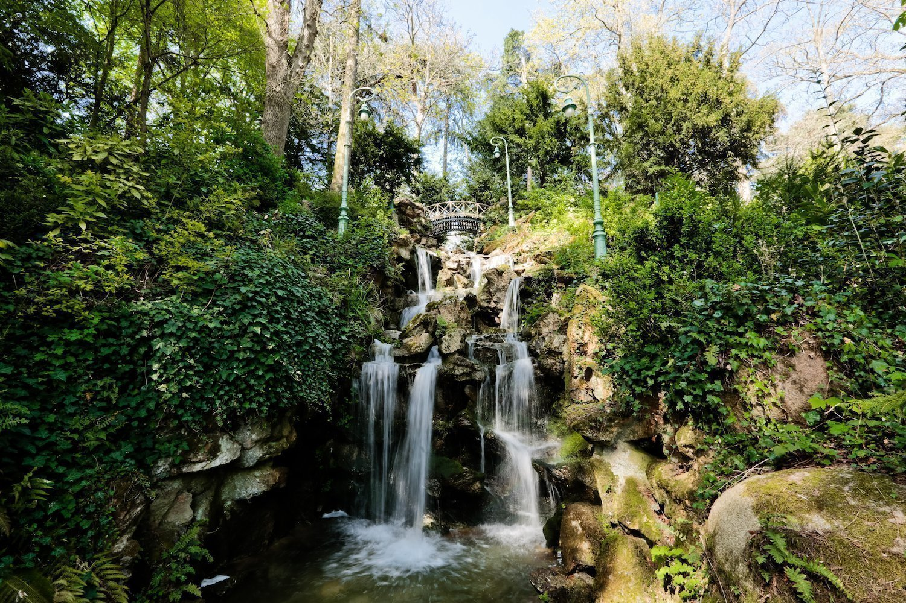

Lieu magique et envoutant, cette partie romantique du parc abrite plusieurs aménagements imaginés selon les
projets l’ingénieur Blin : une rivière que vous pouvez enjamber par de petits ponts se terminant sur une
haute cascade romantique. Une grotte et une ménagerie y sont également aménagées.
Cette partie du parc est
nommée “Jardin des Catherinettes”, il doit son nom à l’ancien hospice qui se trouvait à cet endroit
auparavant où étaient accueillis femmes et enfants socialement défavorisés. Cette partie du parc a été
construite au XXe, répondant aux demandes des habitants du quartier bourgeois de la Motte qui réclamaient
une ouverture sur le parc. Le Jardin se trouve tout au sud du parc, près de l’entrée Rue de Paris.
Le Jardin des Catherinettes et sa grotte sont des espaces parfaits pour se rafraichir l’été, l’endroit
ombragé grâce à ses arbres exotiques et l’eau ruisselante de la rivière et de la cascade sauront vous
apportez la fraicheur que vous recherchez.
